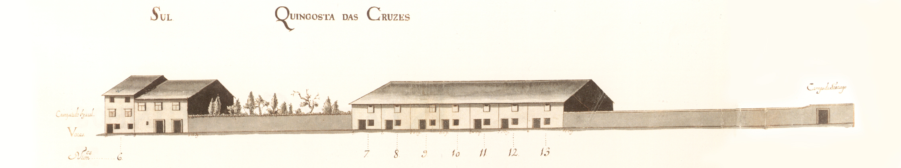

Cangosta das Cruzes
Informações sobre a rua:
De características bem rurais ligava o Campo de S. Tiago com a fachada latera Poente do hospital de S. Marcos.
Não se conhecendo dados sobre a sua história, podemos apenas dizer que em 1750 estava só parcialmente construída, com casas simples, de 2 pisos, muitas delas com janelas de tipo bracarense. Um correr de habitações do tipo de porta com janela ao lado, no piso térreo (prazos 7 a 13), bem como a casa grande, mas de características rurais, virada ao campo de S. Tiago, são as peças de arquitectura desta rua, ainda hoje, bem secundária e, também, com muitos poucos edifícios a ladeá-la.
Das 17 casas ao lado Norte e 9 do lado Sul, eram prazos do Cabido 5 e 8 respectivamente.
Não sabemos a razão porque esta Cangosta foi conhecida pelo nomes das «Cruzes», nem sabemos qual a data em que passou a ser conhecida pelo nome actual, «Falcões», embora em 1857 já assim apareça designada. Essa designação deverá ser mais antiga e provém, sem dúvida, do nome da família Falcões Cota cujo palácio existente no Campo de S. Tiago tinha a envolvê-lo terrenos desta rua, os que estão a Oeste do prazo nº 13.
Porta de serventia do nº 20 da Rua do Anjo.
Pertence ao nº 17 da Rua do Anjo.
Porta de serventia do nº 15 da Rua do Anjo.
Pertence ao nº 14 da Rua do Anjo.
Pertence ao nº 13 da Rua do Anjo.
Confronta, do norte, com casa foreira ao Hospital de S. Marcos.
Leira denominada Castelo Rodrigo, pertencente ao quintal de uma casa dízima a Deus.
Os subenfiteutas pagam foro ao nº 1 do Campo de Santiago.
Casas:
- Número: 1
Enfiteuta:
Foro:
Descrição:
- Número: 2
Enfiteuta:
Foro:
Descrição:
- Número: 3
Enfiteuta:
Foro:
Descrição:
- Número: 4
Enfiteuta:
Foro:
Descrição:
- Número: 5
Enfiteuta:
Foro:
Descrição:
- Número: 6
Enfiteuta:
Foro:
Descrição:
- Número: 7 a 13
Enfiteuta: Estevão Falcão Costa
Foro:
Descrição:

